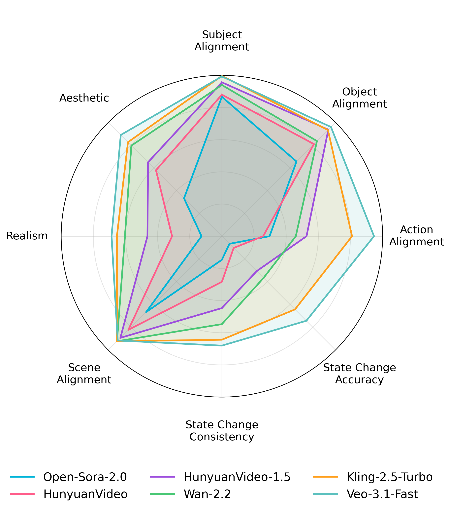
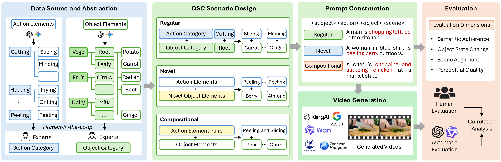
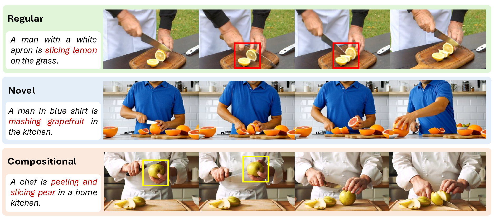
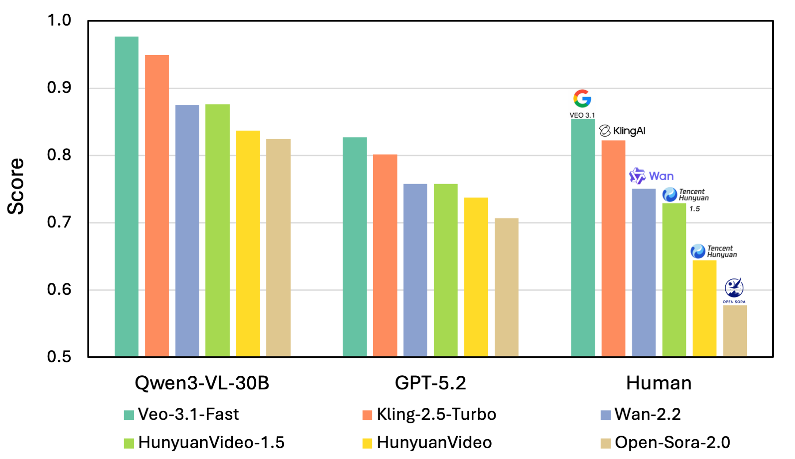
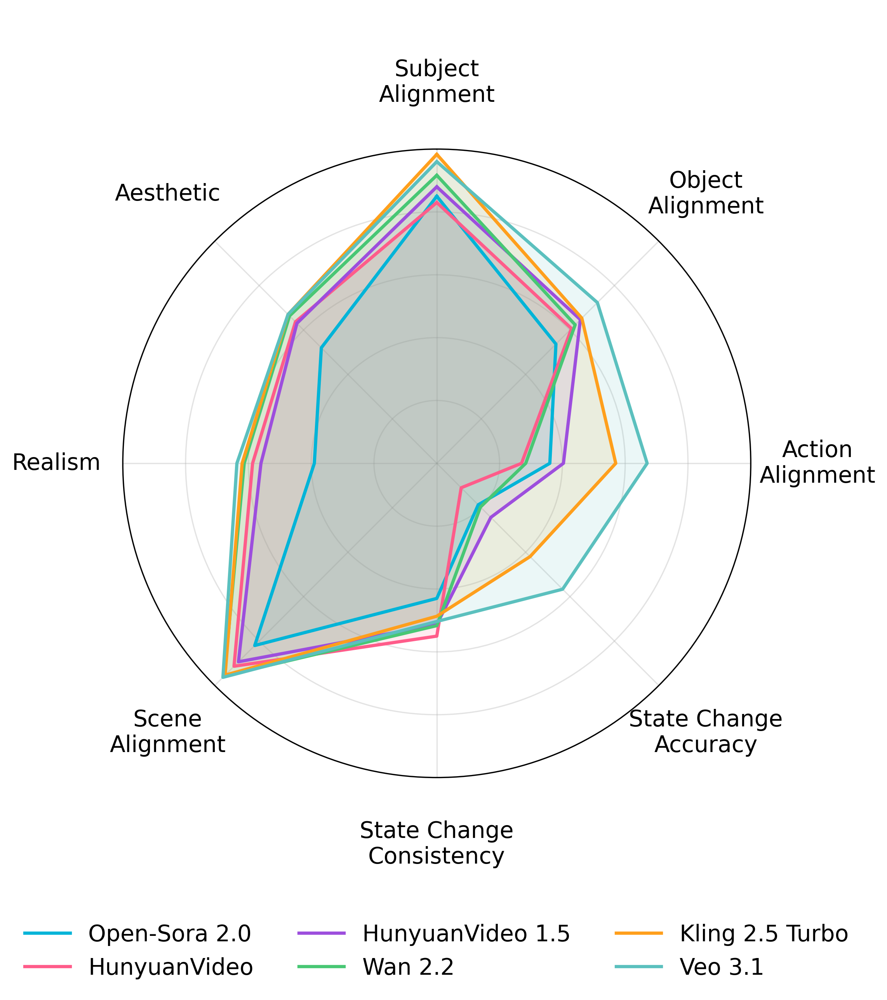
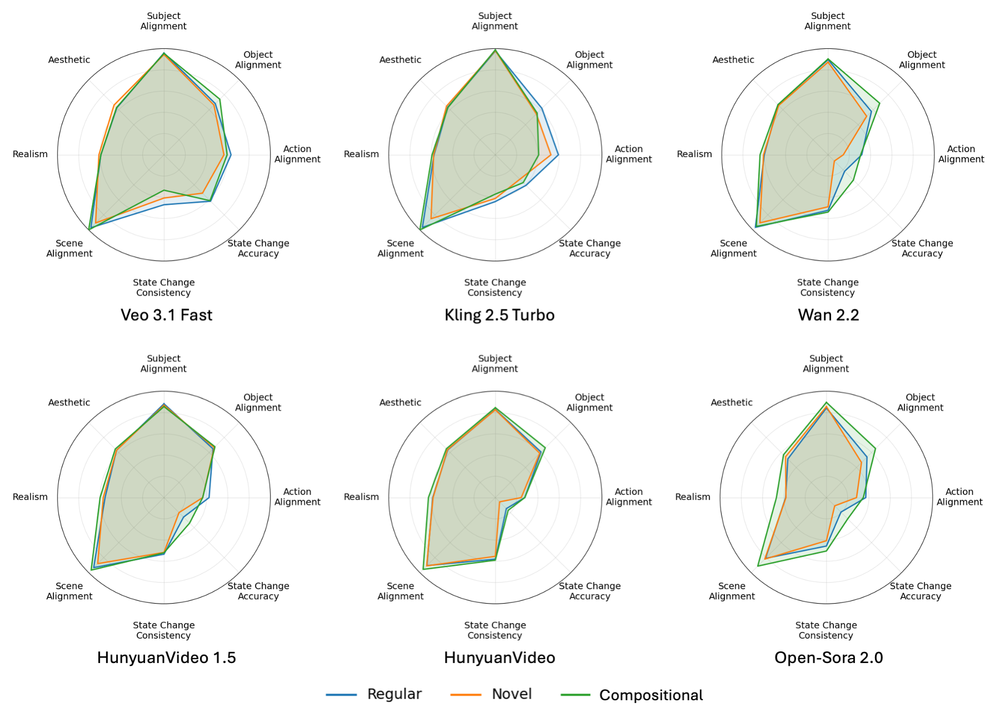
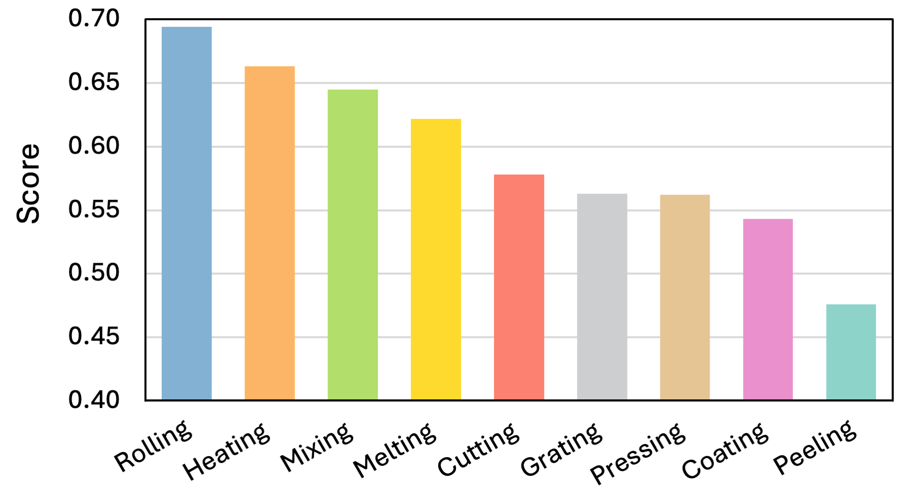

Object State Change in T2V Generation
- Object state change (OSC) is common in daily life and indicates whether a task has been completed.
- Existing T2V evaluations mainly focus on semantic alignment, visual quality and physical plausibility, but overlook whether the object reaches the action-induced state.
- T2V-generated videos may look plausible but still fail to produce correct and temporally consistent object state changes (see figure on the right).

Performance evaluated by human.
Overview of OSCBench

Overview of the OSCBench. We build unified action and object categories from instructional cooking data via a human-in-the-loop process, and construct regular, novel, and compositional OSC scenarios as text prompts for video generation. The generated videos are evaluated by humans and MLLMs, and we analyze their correlations to assess automatic evaluation reliability.
Benchmark Statistics
20 action elements → 8 action categories
134 object elements → 28 object categories
108 regular scenarios
20 novel scenarios
12 compositional scenarios
Each scenario contains 8 action–object pairs
1,120 prompts overall

Example prompts and failure cases from regular, novel, and compositional OSC scenarios.
Main Results
Overall Performance of T2V Models

Overall performance of T2V models from human and MLLM-based evaluators.

Performance of different evaluation dimension by GPT-5.2.
Performance of Different Scenarios

Regular scenarios achieve the highest OSC performance, while novel scenarios show the most severe degradation. Compositional scenarios perform better than novel ones.
OSC Performance of Different Actions
- Models perform well on simple actions with clear and visually salient state changes, such as rolling and heating.
- Performance drops on actions involving complex hand–object interactions or subtle visual changes, such as peeling, coating, and pressing.

OSC Performance of different actions evaluated by human.
Interesting Results
Regular scenario: A chef is slicing leek at a street food stand
(Artificial artifacts)
Regular scenario (minimal prompt): Peeling zucchini
(Artificial artifacts)
Novel scenario: A woman is zesting grapefruit in the kitchen
(memorization rather than understanding)
Compositional scenario: A robot with robotic hands is mincing and sauteing ginger in the kitchen
(Only one state change)
BibTeX
@article{han2026oscbench,
title={OSCBench: Benchmarking Object State Change in Text-to-Video Generation},
author={Han, Xianjing and Zhu, Bin and Hu, Shiqi and Li, Franklin Mingzhe and Carrington, Patrick and Zimmermann, Roger and Chen, Jingjing},
journal={arXiv preprint arXiv:2603.11698},
year={2026}
}